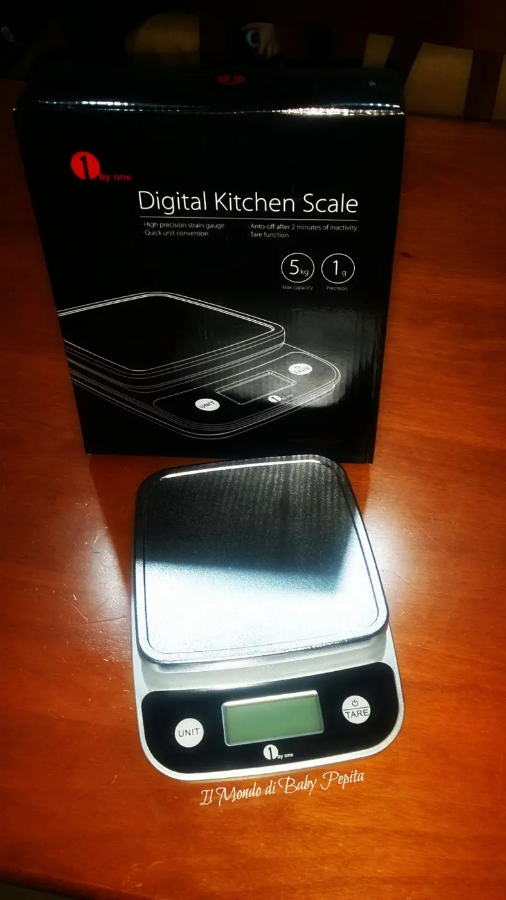
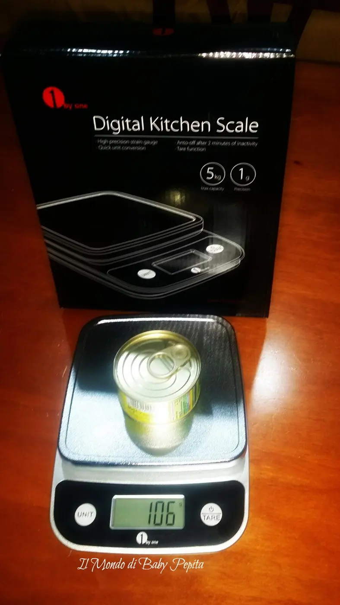
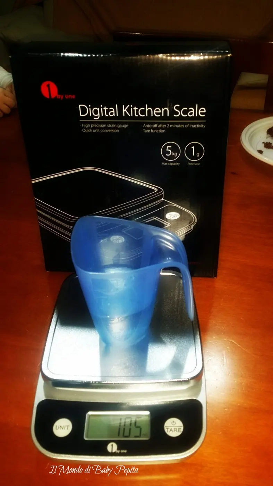
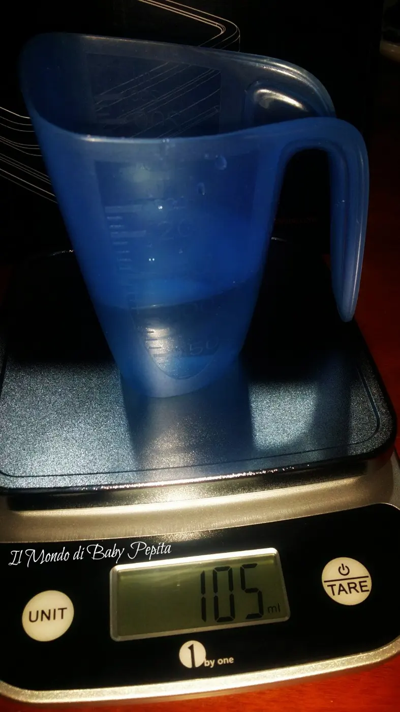

1byone EU - Bilancia da cucina digitale
CiaooooooAncora una volta sono qui a parlarvi di un prodotto arrivato da Amazon, il venditore in questione è 1byone EU. Parliamo di un accessorio per la cucina,quindi amanti dei fornelli è a voi che parlo hahahahL'accessorio di cui parleremo è una bilancia da cucina digitale con display di precisione.

Permette una gamma di precisione da 0,3 grammi fino a 5kg.Facilmente converte tutte le unita' di misura libre (lb), once (oz), grammi (g), millilitri (ml).

Ormai siamo tutti presi dalla mania della bilancia e quindi di pesare tutto in cucina o per una dieta, o per ricette che al giorno d'oggi girano sul web, o magari per uso salutare ed è così che la bilancia diventa importante in una cucina.

Che diventi anche un accessorio di bellezza sul nostro piano da cucina è tutto di guadagnato, sì perché tale bilancia è anche bella nel design di colore grigio/nero, di dimensioni ridottissime, dunque nemmeno ingombrante, ottima caratteristica che per noi donne è importante.
20 cm x 15.4 cm x 4 cm ed è capace di pesare fino a 5 kg

Si presenta con un piano piatto dove appoggeremo i nostri ingredienti da pesare, sotto troviamo il display digitale che non ha tasti da schiacciare ma è touchscreen quindi basterà semplicemente passare un dito sopra ed il gioco è fatto.